The challenge
BOPUS had meaningful customer value—speed and no delivery fee—but it was hidden deep in the shopping flow. More critically, a generic pickup filter did not answer the customer’s real question: is this item available at the store I intend to visit?
My role & strategic contribution
I worked across mobile, tablet, desktop, and in-store BOPUS touchpoints. My contribution was to turn scattered inventory controls into a coherent preferred-store strategy, grounded in firsthand customer research and feasible platform constraints.
Reframing the problem
1. Previous Design Evaluation
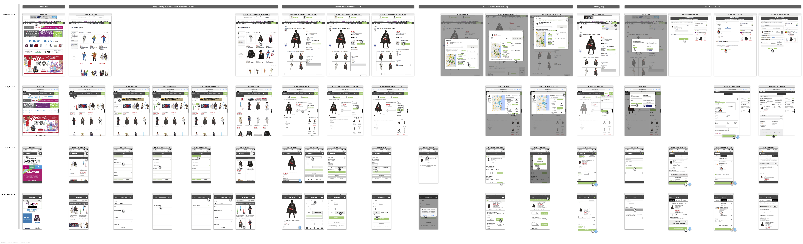
This is a map of the previous best practice work flows of how a user places a BOPUS order on different platforms. Compare to a regular online order, user has to apply a specific filter to find a BOPUS eligible merchandise. Sometimes even if the user finds one, it might not be in stock in the store loction expected. This user flow is especially complicated on mobile platform because the filter is too hidden.
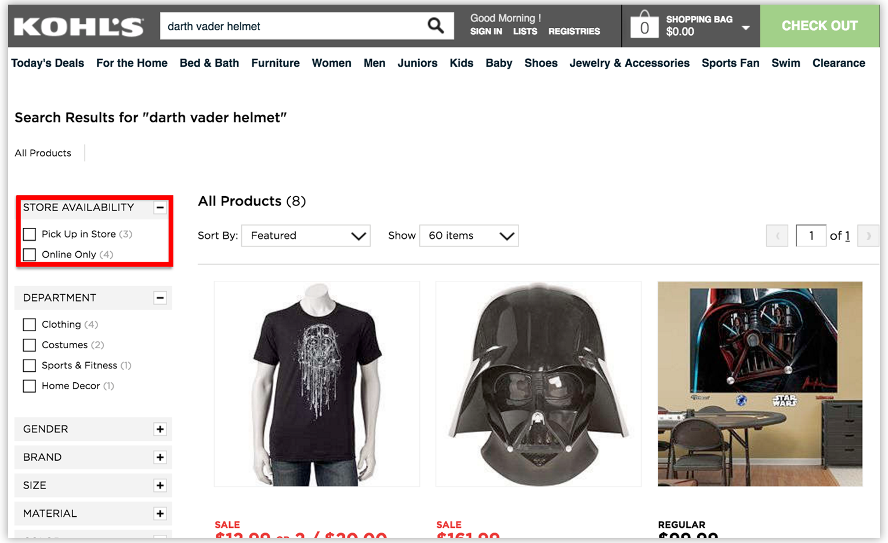
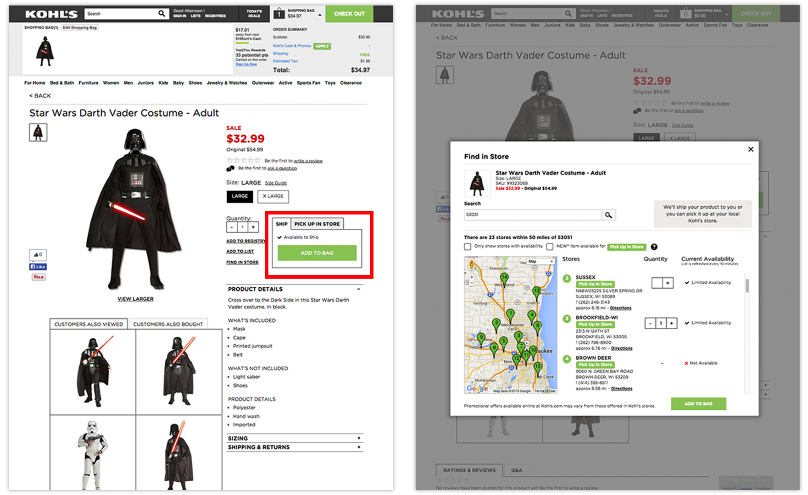
Because of the limited space on mobile platform, the filters are not displayed directedly. Applying a BOPUS filter would usually take a user at least 4 taps.
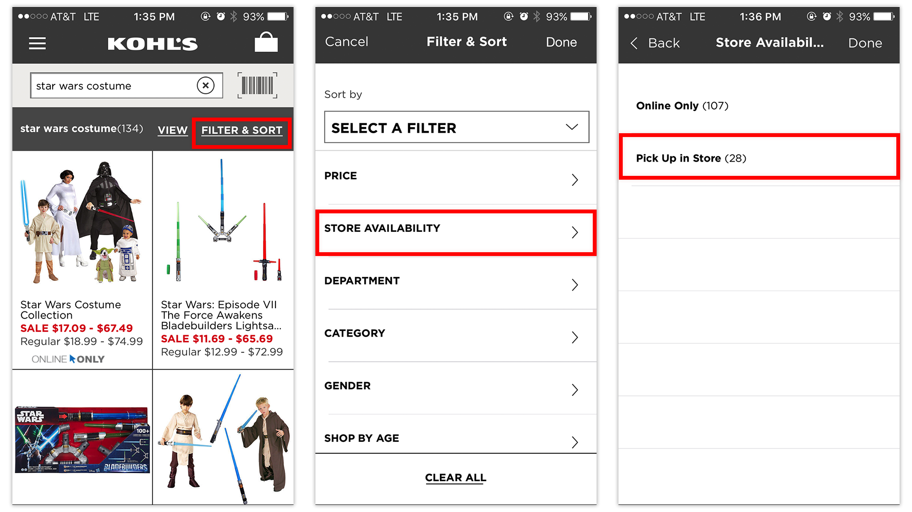
2. Usability Test of Previous BOPUS Experience
We have dedicated research team worked on the usability test of previous BOPUS workflow. However, I also went to Kohl's stores and grab random customers to do usability tests to get some first hand data. Some finds related to BOPUS are:
- The top reason given for usage of the Pick Up in Store filter was preferring to avoid shipping costs and the wait for a shipment delivery.
- Other noted benefits of picking up in store included being able to see and touch the product before bringing it home and ease of return.
- 15% of those who indicated they used filters in general used the Pick Up in Store filter.
Customer feedback highlights:
"I wanted to have the item for store pick up. Was told the item was unavailable. Upon switching to delivery to my home it was available. $8.95 for delivery. Seriously rethinking my love of Kohl's"
"With the advertising for being able to pick up in store, it would be nice to actually find something that is available to pick up. I have not been able to find one item that is available to pick up at store. I wanted to use my Kohl's cash without having to get to the store. Unsuccessful, $10 in the trash."
3. Competitive Analysis
Our retailer competitors also have similar "Pick up in store" filter. We found a few of them started implementing a preferred store location as a filter option. This inspired me to explore further on this design opportunity.
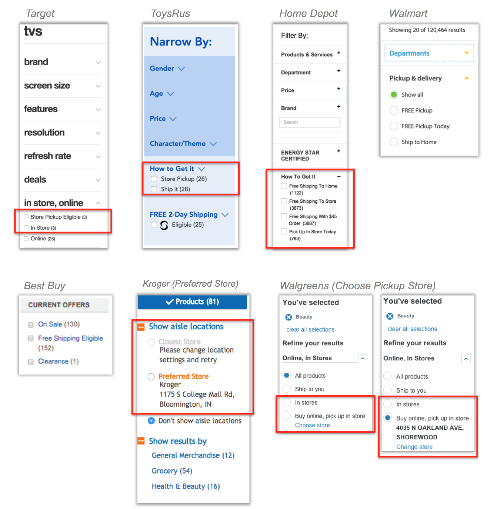
A summary chart for the compatitive analysis
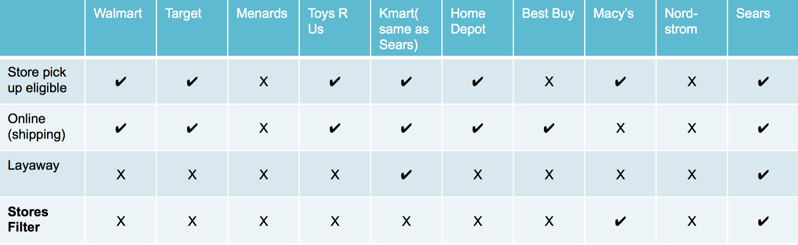
Strategic takeaway
One key problem we found that affects BOPUS online shopping experience is INVENTORY VISIBILITY when searching for target items. It happens that merchadise could be in stock in some stores but out of stock in some other stores. Using the “Pick up in store” filter doesn’t assure the product is available at the store customer wants to go. The user either need to find another store to pick up, or give up the merchandise and choose another item.
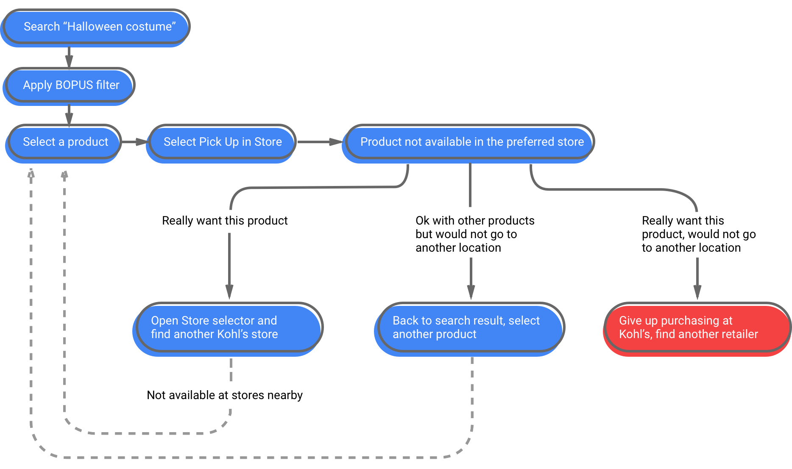
The design journey: selected decisions
Based on the research, some design opportunies were identified.
- Noticing BOPUS as an option on the site while searching or browsing for a product can lead to a decision to use BOPUS.
- A desire to save time and costs paired with the pre-existing knowledge that there’s a Kohl’s store nearby leads to a decision to use BOPUS before exploring the Kohl’s site... as long as there is an awareness of or expectation of the availability of BOPUS.
- There are other noted value-adds that would require a separate In-Store filter: checking whether merchandise available in nearby stores, researching a planned in-store purchase in advance.
Exploring the product model
BOPUS awareness can be brought as early as when user searches target items. Either a BOPUS search query or BOPUS toggle can help user see the inventory in user's prefered store.
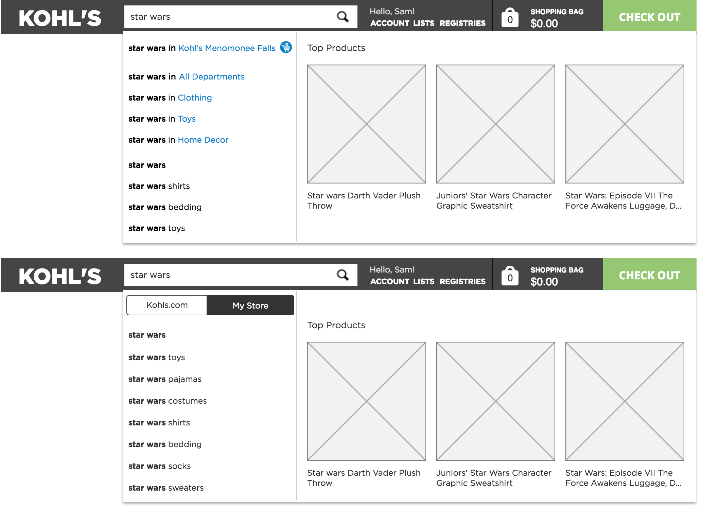
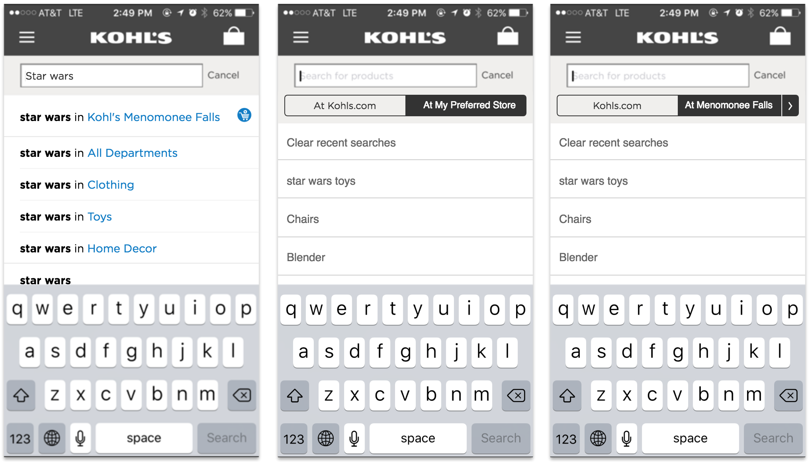
Store Filters also provide users with the inventory visibility of nearby stores. It assures users what they see will be in stock in store and available for pickup on the same day.
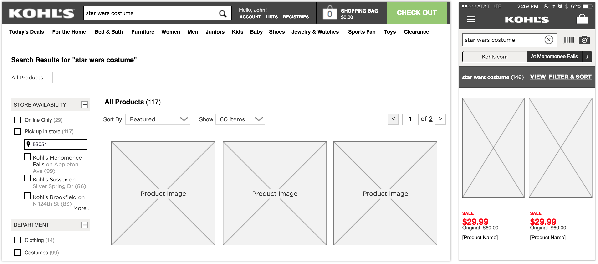
Making the strategy shippable
There are many design variations and iterations around the concepts of integrated search and store filters. I did test with customers in store. Most feedback are positive. However, when it comes to a releasible design delivery, there are many constraints implementing the "ideal design". For example:
- Integrated search on Web was conflicting with another project we were doing.
- Store filter on the search result page has page performance issues that current technology could not solve. So I have to reduce the stores displayed by default.
- Big changes on the page layout to fit new design elements is not doable, because it will trigger redesign of a lot more elements. Thus I got too limited space to "dream bigger".
So, some ideas were moved into backlog. Some ideas need to compromise. However, design is never wasted. When the business value is big enough to initiate bigger redesign, or when we have less technology constraints, a better user experience will be delivered to our customers.
The solution
We believe the Store Filter will help users find their BOPUS eligible products more easily omni-channel
Desktop Web Store
At Kohls.com, a preferred store is set either by the user or geo-located based on user location. We call it "My Store". By selecting "Pick Up in Store" filter, it will automatically select the preferred store to filter down search results. User can also load more nearby stores to see more product options.
Store Filter is special enough to be displayed on top of other filters.
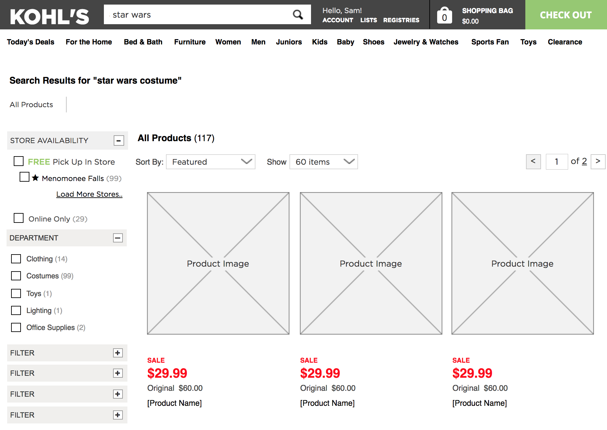
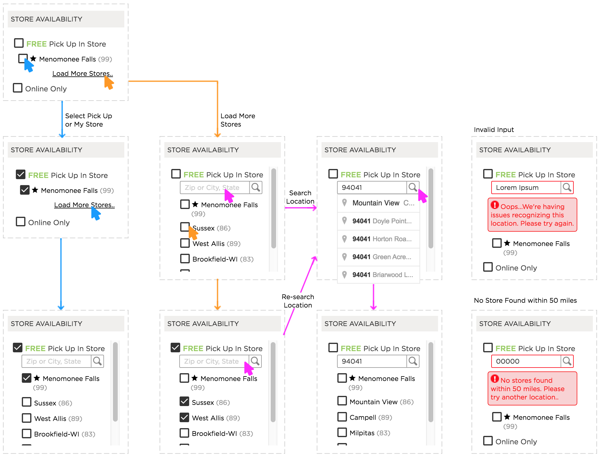
Tablet Web Store
Kohl's web store is taking an adaptive approach to fit different device sizes. All filters on Kohl's tablet web store are grouped into a FILTER button. We believe the store filter deserves its own button that user can easily see and use.
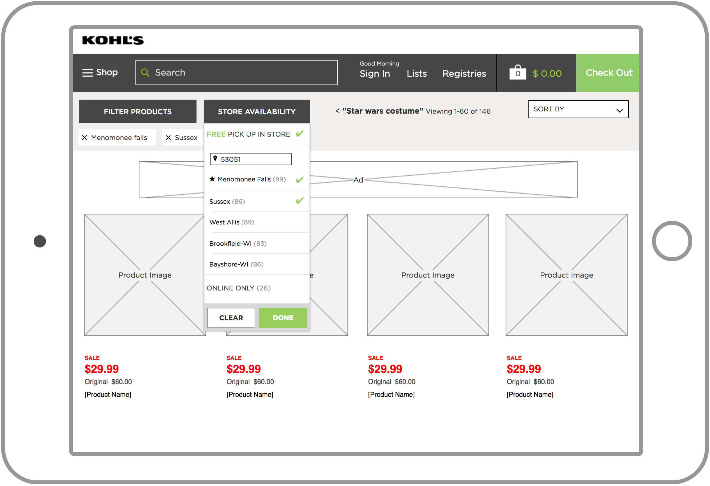
Mobile Native App
Mobile Phone platform has smaller space that can fit a list of store filters. A toggle switch is used to easily filter the search results by preferred store inventory.
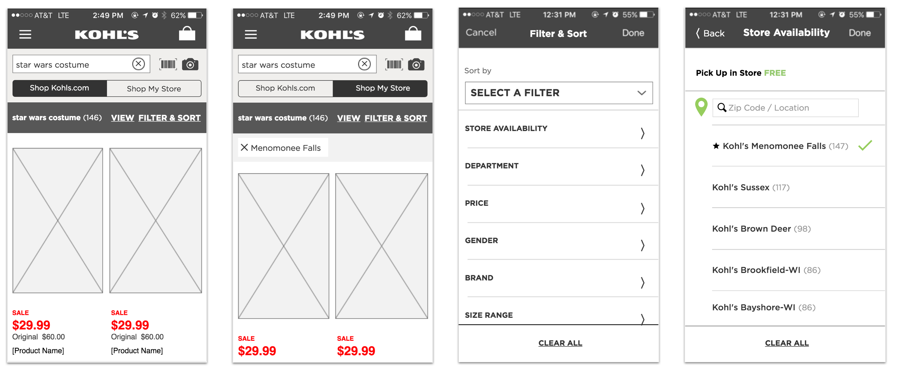
Mobile platform has smaller space that can fit a list of store filters. A toggle switch is used to easily filter the search results by preferred store inventory.
Impact & reflection
With store filters. new flow is more linear when user searches BOPUS eligible products.
The store filter shipped shortly after I left Kohl’s, followed later by the mobile Shop My Store toggle. BOPUS grew into a material part of Kohl’s business; use a sourceable, time-stamped metric here before publishing a specific attribution.
Leadership reflection: The work reinforced that omnichannel design needs a shared customer promise across surfaces. A strong pattern is not simply responsive UI—it preserves the same decision confidence wherever the customer starts.